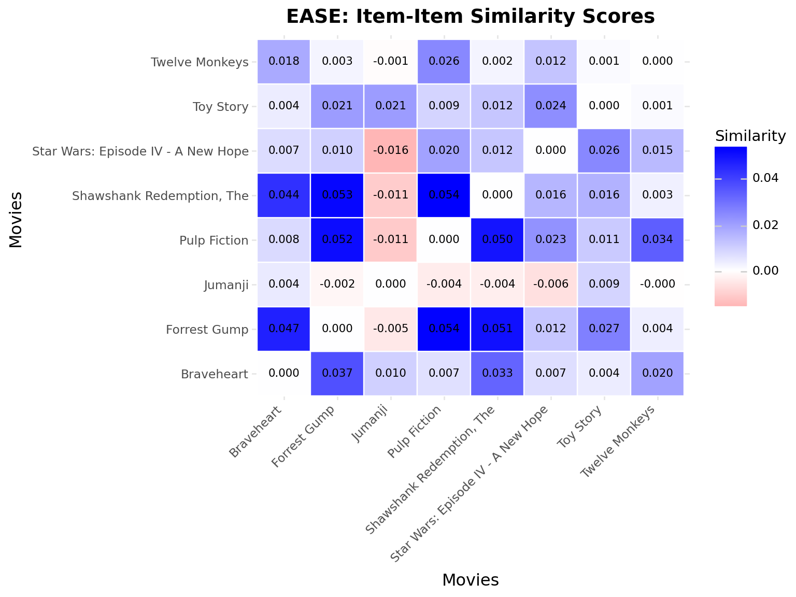

# Step 2: Select users with at least 50 ratingsuser_counts = high_ratings.group_by("user_id").agg(pl.count().alias("num_ratings"))active_users = user_counts.filter(pl.col("num_ratings") >=50)display( Markdown(f"""**Step 2: Select users with >= 50 high ratings**- Users with >= 50 high ratings: {len(active_users):,}- Average ratings per active user: {active_users["num_ratings"].mean():.1f}"""))# Step 3: Sample 20k users randomlynp.random.seed(42)sampled_user_ids = active_users.sample(n=min(20000, len(active_users)), seed=42)["user_id"].to_list()display( Markdown(f"""**Step 3: Sample 20k users (seed=42)**- Sampled users: {len(sampled_user_ids):,}"""))
/tmp/ipykernel_3434679/3740892644.py:2: DeprecationWarning: `pl.count()` is deprecated. Please use `pl.len()` instead.
(Deprecated in version 0.20.5)
Step 2: Select users with >= 50 high ratings
Users with >= 50 high ratings: 90,347
Average ratings per active user: 148.1
Step 3: Sample 20k users (seed=42)
Sampled users: 20,000
Show code
# Step 4: Filter to sampled userssampled_ratings = high_ratings.filter(pl.col("user_id").is_in(sampled_user_ids))# Step 5: Select top 5k items with most ratingsitem_counts = sampled_ratings.group_by("movie_id").agg(pl.count().alias("num_ratings"))top_items = item_counts.sort("num_ratings", descending=True).head(5000)top_item_ids = top_items["movie_id"].to_list()display( Markdown(f"""**Step 4: Select top 5k items with most ratings**- Top items selected: {len(top_item_ids):,}- Min ratings for top items: {top_items["num_ratings"].min():,}- Max ratings for top items: {top_items["num_ratings"].max():,}"""))# Step 6: Filter to top itemsfiltered_ratings = sampled_ratings.filter(pl.col("movie_id").is_in(top_item_ids))
/tmp/ipykernel_3434679/3391061573.py:5: DeprecationWarning: `pl.count()` is deprecated. Please use `pl.len()` instead.
(Deprecated in version 0.20.5)
Step 4: Select top 5k items with most ratings
Top items selected: 5,000
Min ratings for top items: 56
Max ratings for top items: 11,627
Show code
# Step 7: Select Bob randomly from the 20k usersnp.random.seed(42)bob_id = np.random.choice(sampled_user_ids)display( Markdown(f"""**Step 5: Select Bob (random user from sample)**- Bob's user ID: {bob_id}- Bob's ratings in dataset: {filtered_ratings.filter(pl.col("user_id") == bob_id).shape[0]}"""))
# Get unique valuesunique_user_ids = train_ratings["user_id"].unique().sort().to_list()unique_movie_ids = train_ratings["movie_id"].unique().sort().to_list()# Create user/item ID mappingsuser_to_idx = {uid: idx for idx, uid inenumerate(unique_user_ids)}item_to_idx = {mid: idx for idx, mid inenumerate(unique_movie_ids)}
EASE: Embarrassingly Shallow Autoencoders
Key Idea: Learn item-item similarity matrix directly via closed-form solution!
From Steck (2019): EASE is a linear model that’s: - Simple: No neural networks, no iterations - Strong: Competitive with deep models - Fast: Closed-form solution
interactions = train_ratings.filter(pl.col("rating") >=4.0).select(["user_id", "movie_id"])interaction_stats =f"""**Binary Interaction Matrix:**- Total positive interactions (rating >= 4.0): {len(interactions):,}- Percentage of all ratings: {len(interactions) /len(train_ratings) *100:.1f}%- Unique users with interactions: {interactions["user_id"].n_unique():,}- Unique items with interactions: {interactions["movie_id"].n_unique():,}"""display(Markdown(interaction_stats))display(Markdown("**BINARY INTERACTIONS (rating >= 4.0, first 10):**"))display(interactions.head(10))# Build sparse matrixrows = [user_to_idx[uid] for uid in interactions["user_id"].to_list() if uid in user_to_idx]cols = [item_to_idx[mid] for mid in interactions["movie_id"].to_list() if mid in item_to_idx]data = [1] *len(rows)X = sp.csr_matrix((data, (rows, cols)), shape=(len(user_to_idx), len(item_to_idx)))matrix_info =f"""**Interaction Matrix:**- **Shape:** {X.shape}- **Density:** {X.nnz / (X.shape[0] * X.shape[1]) *100:.4f}%- **Total interactions:** {X.nnz:,}"""display(Markdown(matrix_info))
Binary Interaction Matrix:
Total positive interactions (rating >= 4.0): 2,228,211
Percentage of all ratings: 100.0%
Unique users with interactions: 19,999
Unique items with interactions: 5,000
BINARY INTERACTIONS (rating >= 4.0, first 10):
shape: (10, 2)
user_id
movie_id
i64
i64
7
1
7
11
7
36
7
150
7
364
7
367
7
380
7
500
7
527
7
539
Interaction Matrix:
Shape: (19999, 5000)
Density: 2.2283%
Total interactions: 2,228,211
Train EASE Model
Show code
ease_model = EASE(reg=500.0)ease_model.fit(X)print("✓ EASE model trained!")print(f" B matrix shape: {ease_model.B.shape}")print(f" B matrix sparsity: {(ease_model.B ==0).sum() / ease_model.B.size *100:.2f}%")
✓ EASE model trained!
B matrix shape: (5000, 5000)
B matrix sparsity: 0.02%
EASE Recommendations for Bob
Show code
bob_idx = user_to_idx[bob_id]idx_to_item = {idx: mid for mid, idx in item_to_idx.items()}ease_recs = ease_model.recommend_for_user(bob_idx, X, k=10)ease_movie_ids = [idx_to_item[idx] for idx in ease_recs]ease_recs_df = movies.filter(pl.col("movie_id").is_in(ease_movie_ids)).select(["title", "genres"])ease_stats =f"""**EASE Recommendations for Bob:**- Recommended movies: {len(ease_recs_df)}- Based on item-item similarity learned from interactions- Excludes movies Bob has already rated"""display(Markdown(ease_stats))display(ease_recs_df)
EASE Recommendations for Bob:
Recommended movies: 10
Based on item-item similarity learned from interactions
Excludes movies Bob has already rated
shape: (10, 2)
title
genres
str
list[str]
"Toy Story (1995)"
["Adventure", "Animation", … "Fantasy"]
"Twelve Monkeys (a.k.a. 12 Monk…
["Mystery", "Sci-Fi", "Thriller"]
"Groundhog Day (1993)"
["Comedy", "Fantasy", "Romance"]
"American Beauty (1999)"
["Drama", "Romance"]
"Snatch (2000)"
["Comedy", "Crime", "Thriller"]
"Old Boy (2003)"
["Mystery", "Thriller"]
"There Will Be Blood (2007)"
["Drama", "Western"]
"WALL·E (2008)"
["Adventure", "Animation", … "Sci-Fi"]
"Grand Budapest Hotel, The (201…
["Comedy", "Drama"]
"Parasite (2019)"
["Comedy", "Drama"]
EASE Item Similarity for Example Movies
Show code
# Get similarity scores between example moviesexample_indices_ease = [item_to_idx[mid] for mid in EXAMPLE_MOVIE_IDS if mid in item_to_idx]# Get movie titlesexample_titles = []for idx in example_indices_ease: movie_id = [mid for mid, midx in item_to_idx.items() if midx == idx][0] title = movies.filter(pl.col("movie_id") == movie_id)["title"][0].split("(")[0].strip() example_titles.append(title)# Create data for heatmapheatmap_data = []for i, idx_i inenumerate(example_indices_ease):for j, idx_j inenumerate(example_indices_ease): similarity = ease_model.B[idx_i, idx_j] heatmap_data.append( {"movie_1": example_titles[i], "movie_2": example_titles[j], "similarity": similarity} )heatmap_df = pd.DataFrame(heatmap_data)display(Markdown("**EASE Item Similarity Matrix (Example Movies):**"))( ggplot(heatmap_df, aes(x="movie_1", y="movie_2", fill="similarity"))+ geom_tile(color="white", size=0.5)+ geom_text(aes(label="similarity"), format_string="{:.3f}", size=8)+ scale_fill_gradient2(low="red", mid="white", high="blue", midpoint=0)+ labs(title="EASE: Item-Item Similarity Scores", x="Movies", y="Movies", fill="Similarity")+ theme(axis_text_x=element_text(rotation=45, hjust=1)))
EASE Item Similarity Matrix (Example Movies):

EASE Scores for Example Movies
Show code
# Get EASE scores for Bob on example moviesbob_idx = user_to_idx[bob_id]# Get Bob's interaction vectorbob_interactions = X[bob_idx].toarray().flatten()# Compute scores for all itemsease_scores_all = bob_interactions @ ease_model.B# Get scores for example moviesease_scores_data = []for movie_id in EXAMPLE_MOVIE_IDS:if movie_id in item_to_idx: item_idx = item_to_idx[movie_id] ease_score = ease_scores_all[item_idx]# Check if Bob rated this movie bob_ratings = train_ratings.filter( (pl.col("user_id") == bob_id) & (pl.col("movie_id") == movie_id) ) has_rated ="Yes"iflen(bob_ratings) >0else"No" title = movies.filter(pl.col("movie_id") == movie_id)["title"][0] ease_scores_data.append({"title": title, "ease_score": ease_score, "bob_rated": has_rated})ease_scores_df = pl.DataFrame(ease_scores_data).sort("ease_score", descending=True)display( Markdown("""**EASE Scores for Bob on Example Movies:**EASE computes scores as: `user_interactions @ B`- Higher scores → stronger recommendation signal- Bob rated = whether Bob already rated this movie"""))display(ease_scores_df)
EASE Scores for Bob on Example Movies:
EASE computes scores as: user_interactions @ B
Higher scores → stronger recommendation signal
Bob rated = whether Bob already rated this movie
shape: (8, 3)
title
ease_score
bob_rated
str
f64
str
"Pulp Fiction (1994)"
1.095708
"Yes"
"Star Wars: Episode IV - A New …
0.827303
"Yes"
"Twelve Monkeys (a.k.a. 12 Monk…
0.778288
"No"
"Shawshank Redemption, The (199…
0.715827
"Yes"
"Forrest Gump (1994)"
0.675034
"Yes"
"Toy Story (1995)"
0.670052
"No"
"Braveheart (1995)"
0.14444
"No"
"Jumanji (1995)"
0.067045
"No"
Evaluation
Show code
# Evaluate EASE on test settest_user_ids = test_ratings["user_id"].unique().to_list()# Only evaluate users in training seteval_user_ids = [uid for uid in test_user_ids if uid in user_to_idx]ease_metrics = []for user_id in eval_user_ids[:100]: # Sample for speed user_idx = user_to_idx[user_id]# Get test items for this user (only high ratings >= 4.0) user_test_items = test_ratings.filter(pl.col("user_id") == user_id)["movie_id"].to_list()# Convert to indices and create a set test_item_indices =set([item_to_idx[mid] for mid in user_test_items if mid in item_to_idx])iflen(test_item_indices) ==0:continue# Get EASE recommendations ease_recs = ease_model.recommend_for_user(user_idx, X, k=20)# Calculate metrics recall = recall_at_k(ease_recs, test_item_indices, k=10) ndcg = ndcg_at_k(ease_recs, test_item_indices, k=10) ease_metrics.append( {"model": "EASE","recall@10": recall,"ndcg@10": ndcg, } )ease_metrics_df = pl.DataFrame(ease_metrics)eval_summary =f"""**EASE Evaluation Results:**- **Recall@10**: {ease_metrics_df["recall@10"].mean():.4f}- **NDCG@10**: {ease_metrics_df["ndcg@10"].mean():.4f}- Users evaluated: {len(ease_metrics_df)}"""display(Markdown(eval_summary))